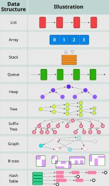

A data structure is essentially a format for managing and storing data in computer memory. You may often hear this as "data structures and algorithms" that is because the data structure itself is essentially just a container, and algorithms are the instruction sets we use to access and manipulate that data. Algorithms however are beyond the description of this webpage. Data structures exist in two primary classifications as either linear or non-linear structures. Linear structures arange their data sequentially, such as in an array or a linked list. Non-linear structures store in non-sequentially often hierarchachly such as in a tree, or with key-value pairs such as in a hash table.

| Data Structure | Type |
|---|---|
| List | Linear |
| Array | Linear |
| Stack | Linear |
| Queue | Linear |
| Heap | Non-Linear |
| Tree | Non-Linear |
| Suffix Tree | Non-Linear |
| Graph | Non-Linear |
| Hash Table | Non-Linear |